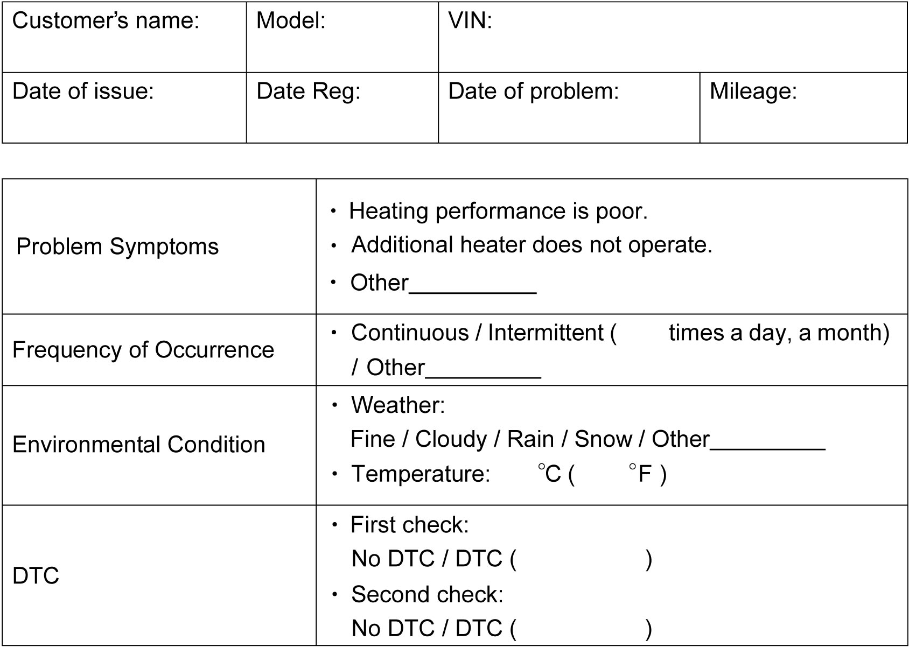

7B
| Additional Heater (If Equipped) System Check |
| Step | Action | Yes | No |
|---|---|---|---|
| 1 |
Customer complaint analysis
1)Perform Step 1. Customer complaint analysis.
Was customer complaint analysis performed?
|
Go to Step 2.
|
Perform customer complaint analysis.
|
| 2 |
Visual inspection
1)Perform Step 2. Visual inspection.
Is there any faulty condition?
|
Repair or replace defective part.
|
Go to Step 3.
|
| 3 |
DTC check
1)Perform Step 3. DTC check.
Is there any DTC stored?
|
Go to Step 4.
|
Go to Step 5.
|
| 4 |
Troubleshooting malfunction
1)Perform Step 4. Troubleshooting malfunction.
Is there any faulty condition?
|
Repair or replace defective part, and then go to Step 7.
|
Go to Step 5.
|
| 5 |
HVAC system symptom diagnosis
1)Check and repair HVAC system.
Is there any faulty condition?
|
Repair or replace defective part, and then go to Step 7.
|
Go to Step 6.
|
| 6 |
Check for intermittent problem
1)Check for intermittent problems.
Is there any faulty condition?
|
Repair or replace defective part, and then go to Step 7.
|
Go to Step 7.
|
| 7 |
Final confirmation test
1)Perform Step 7. Final confirmation test.
Is there any malfunction DTC stored?
|
Go to Step 4.
|
End.
|
Description for Each Step
Step 1. Customer complaint analysis
Talk to customer, and then record details of the problem.
NOTE:
The from is a standard sample. It should be modified according to conditions characteristic of each market.
Customer questionnaire form (Example)

 "Expand image")
Step 2. Visual inspection
As a preliminary step, perform visual check of heater system components. 
Step 3. DTC check
Check DTC.
Step 4. Troubleshooting malfunction
Based on the DTC, perform an applicable DTC diagnostic flow to locate cause of the trouble in such component as input signal, wire harness, connector, additional heater relay, ECM or other part. Repair or replace faulty parts.
Step 5. HVAC system symptom diagnosis
Check any part or system suspected to be a possible cause.
Step 6. Check for intermittent problem
Check parts that are prone to cause intermittent problem (e.g. wire harness, connector, etc.) and circuits related to recorded DTC.
Step 7. Final confirmation test
Check that trouble symptom has disappeared and additional heater system is free from abnormal conditions. Clear recorded DTCs, check that the same DTC is not detected and check if any other DTC is detected.